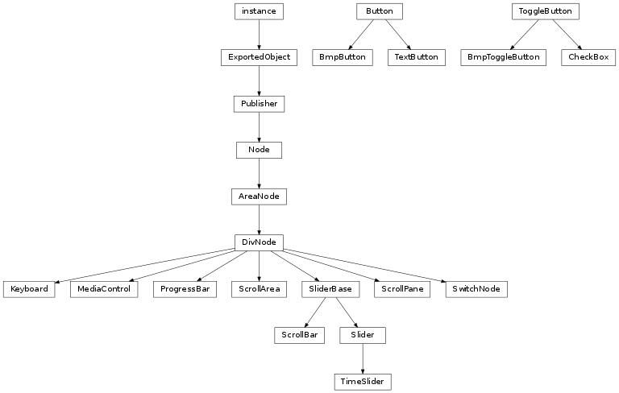
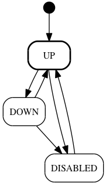
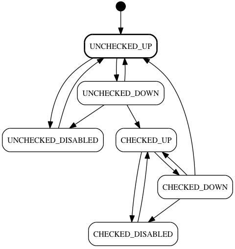

Widget Classes¶
The libavg.widget module contains high-level user interface elements such as buttons and
list boxes. Widgets are fully skinnable (using the Skin class and an xml
configuration file) and multitouch-enabled. Sample code for all widgets can be found in the
widget.py sample.
Note
The widget module is experimental. Functionality and interface are still in flux and subject to change.


-
class
libavg.widget.BmpButton(upSrc, downSrc[, disabledSrc=None])¶ Bases:
libavg.widget.button.ButtonA
Buttonthat is created from image files. Internally, it creates two or threeImageNodes and uses them as constructor parameters forButton.
-
class
libavg.widget.BmpToggleButton(uncheckedUpSrc, uncheckedDownSrc, checkedUpSrc, checkedDownSrc[, uncheckedDisabledSrc=None, checkedDisabledSrc=None])¶ Bases:
libavg.widget.button.ToggleButtonA
ToggleButtonthat is created from image files. Internally, it creates image nodes for the src parameters and uses them as constructor parameters forToggleButton.
-
class
libavg.widget.Button(upNode, downNode[, disabledNode=None, activeAreaNode=None, fatFingerEnlarge=False, enabled=True])¶ Bases:
libavg.widget.button._ButtonBaseA button that shows different user-supplied nodes depending on its state. Possible button states are up, down and disabled. The nodes are attached as children to the Button on construction. For a simple button, image nodes can be passed. Uses the
TapRecognizerto detect clicks.Parameters: - upNode (avg.Node) – The node displayed when the button is not pressed.
- downNode (avg.Node) – The node displayed when the button is pressed.
- disabledNode (avg.Node) – The node displayed when the button is disabled.
- activeAreaNode (avg.Node) – A node that is used only to determine if a click is over the button. Usually,
this node is invisible.
activeAreaNodeis useful for small touch buttons, where the active area should be larger than the visible button to account for touch inaccuracies. - fatFingerEnlarge (bool) – If this parameter is set to
True, the button generates its own internalactiveAreaNodethat is at least 20x20mm large.fatFingerEnlargeis incompatible with a customactiveAreaNode.
Messages:
-
enabled¶ Trueif the button accepts input. If the button is disabled, it shows thedisabledNode.
-
class
libavg.widget.CheckBox([text="", skinObj=skin.Skin.default])¶ Bases:
libavg.widget.button.ToggleButtonThis is a classic checkbox with text to the right.
-
class
libavg.widget.HStretchNode(endsExtent[, src=None, minExtent=-1])¶ Bases:
libavg.widget.base._StretchNodeBaseA node that stretches its graphics to fill the size given horizontally. It is used as base component for scrollbars and buttons. The base bitmap is split into three parts: left, center and right. The left and right parts are
endsExtentwide and generated from the corresponding parts of the source bitmap. The center part is generated from a one pixel wide slice of the source bitmap and stretched to fill the space left between the left and right parts.Parameters: - endsExtent (int) – Width of the left and right bitmaps in pixels.
- src – Either the name of a bitmap file or a
Bitmapobject. Used to generate the graphics used. - minExtent (int) – Minimum horizontal size. The default of -1 uses
2*endsExtent+1as minimum.
-
class
libavg.widget.HVStretchNode(endsExtent[, src=None, minExtent=-(1, -1)])¶ Bases:
libavg.widget.base._StretchNodeBaseA node that stretches its graphics to fill the size given horizontally and vertically. It is used as base component for scrollareas. Similar to
HStretchNode, the base bitmap is split and partial bitmaps are extracted. Four corner bitmaps of sizeendsExtentstay the same size, four one-pixel-slice bitmaps fill the sides, and a single one-pixel bitmap is used to fill the center area.Parameters: - endsExtent (IntPoint) – Size of the corner bitmaps in pixels.
- src – Either the name of a bitmap file or a
Bitmapobject. Used to generate the graphics used. - minExtent (IntPoint) – Minimum size. The default of
(-1,-1]uses2*endsExtent+1as minimum.
-
class
libavg.widget.Keyboard(bgSrc, downSrc, keyDefs, shiftKeyCode[, altGrKeyCode=None, stickyShift=False, feedbackSrc=None])¶ Bases:
libavg.avg.DivNodeImplements an onscreen keyboard that turns mouse clicks or touches into key presses. The keyboard is completely configurable. Keyboard graphics are determined by the two image files in
bgSrcanddownSrc. Keys can be defined as rectangles anywhere on these images. Works for both single-touch and multitouch devices. Generates events when keys are pressed or released. An additional enlarged image of the key being pressed can be rendered above a pending touch as well by usingfeedbackSrc.Needs offscreen rendering support on the machine to generate individual key images from the image files supplied.
Parameters: - bgSrc (string) – Filename of an image that contains the keyboard with unpressed keys.
- downSrc (string) – Filename of an image that contains the keyboard with pressed keys.
- keyDefs (list) –
List of key definitions. Keys can be either character keys:
[(<keycode>, <shift keycode>, <altgr keycode>), <feedback>, <repeat>, <pos>, <size>]or command keys:
[<keycode>, <feedback>, <repeat>, <pos>, <size>]For character keys, the shift and altgr keycodes are optional. To define entire rows of evenly-spaced keys, use
makeRowKeyDefs(). - shiftKeyCode – One of the command keycodes. When a key with this code is pressed, pressing other keys causes them to return the shifted keycode.
- altGrKeyCode – One of the command keycodes. When a key with this code is pressed, pressing other keys causes them to return the altgr keycode.
- stickyShift (bool) – For single-touch devices, the shift key must stay in the pressed state
until the next normal key is pressed to have any effect. This is the
behaviour if
stickyShiftisTrue. If it isFalse(the default), a multitouch device is assumed and shift works like on a physical keyboard. - feedbackSrc (string) – Filename of an image that contains an enlarged version of bgSrc for use as feedback during key pressed. If this parameter not set the feedback funktion is turned off.
Messages:
Keyboardemits messages on every key press and release: To get these messages, callPublisher.subscribe().-
DOWN(keycode)¶ Emitted whenever a key (command or char) is pressed.
-
UP(keycode)¶ Emitted whenever a key (command or char) is released.
-
CHAR(char)¶ Emitted whenever a character is generated. This is generally when a char key is released and takes into account shift/altgr status.
-
reset()¶ Resets any sticky keys (shift, altgr) to their default state.
-
classmethod
makeRowKeyDefs(startPos, keySize, spacing, feedbackStr, keyStr, shiftKeyStr[, altGrKeyStr])¶ Creates key definitions for a row of uniform keys. Useful for creating the keyDefs parameter of the Keyboard constructor. All the keys get no repeat functionality.
Parameters: - startPos (avg.Point2D) – Top left position of the row.
- keySize (avg.Point2D) – Size of each key.
- spacing (int) – Number of empty pixels between two keys.
- keyStr (string) – Unicode string containing the unshifted keycodes (i.e.
u"qwertzuiopżś") - shiftKeyStr (string) – Unicode string containing the shifted keycodes
(i.e.
u"QWERTZUIOPńć") - altGrKeyStr (string) – Unicode string containing the keycodes when altgr is pressed.
-
class
libavg.widget.MediaControl([duration=1000, time=0, skinObj=skin.Skin.default])¶ Bases:
libavg.avg.DivNodeA composite control that incorporates a
Slider, a play/pause button and text widgets that display the time. By itself, theMediaControlis independent of a media node. The controlling application is responsible for keeping track of media node andMediaControlstate and syncing the two.Messages:
-
PLAY_CLICKED()¶ Emitted when the play/pause toggle is switched to play.
-
PAUSE_CLICKED()¶ Emitted when the play/pause toggle is switched to pause.
-
SEEK_PRESSED()¶ Emitted when the user starts dragging the seek thumb.
-
SEEK_MOTION(curTime)¶ Emitted when the user moves the seek thumb.
-
SEEK_RELEASED()¶ Emitted when the user releases the seek thumb.
-
duration¶ Duration of the medium in milliseconds.
-
time¶ Current media time in milliseconds.
-
play()¶ Switches to play mode by toggling the button.
-
pause()¶ Switches to pause mode by toggling the button.
-
-
class
libavg.widget.ProgressBar(orientation[, skinObj=skin.Skin.default, height=0, width=0, range=(0., 1.), value=0.0])¶ Bases:
libavg.avg.DivNodeA horizontal bar-shaped UI element that indicates the progression of an operation.
-
range¶ Tuple giving minimum and maximum value.
-
-
class
libavg.widget.ScrollArea(contentNode, size[, skinObj=skin.Skin.default, enabled=True, scrollBars=(Orientation.HORIZONTAL, Orientation.VERTICAL)])¶ Bases:
libavg.avg.DivNodeA rectangular area that allows a user to choose a view into arbitrary content. The content can be larger than the
ScrollArea, in which case scroll bars can be used to allow the user to choose which part to view. Dragging the content to determine the viewport is also supported. AScrollAreausesScrollPaneandScrollBarobjects internally.Messages:
-
contentsize¶ The size of the
contentNode.
-
contentpos¶ The position of the content within the area.
-
-
class
libavg.widget.ScrollBar([orientation=Orientation.HORIZONTAL, skinObj=skin.Skin.default, enabled=True, height=0, width=0, range=(0., 1.), thumbPos=0.0, thumbExtent=0.1])¶ Bases:
libavg.widget.slider.SliderBaseA vertical or horizontal scroll bar.
Messages:
-
range¶ Minimum and maximum values for the thumb.
-
thumbPos¶
-
thumbExtent¶
-
-
class
libavg.widget.ScrollPane(contentNode)¶ Bases:
libavg.avg.DivNodeA rectangular view into arbitrary content. No user interaction is implemented.
-
contentpos¶
-
contentsize¶
-
-
class
libavg.widget.Skin(skinXmlFName[, mediaDir=""])¶ Bases:
objectA
Skindetermines the appearance of any user interface elements that use it. Skin configuration is determined by an xml file. This xml file determines the bitmaps to use and the sizes of various components. It also determines the fonts used by the elements. Skinnable user interface elements includeTextButton,Slider,ScrollBar,ProgressBar,ScrollArea,CheckBoxandMediaControl. In addition, the fonts defined can be accessed by the application.The default skin xml file is located at
src/python/data/SimpleSkin.xml. It provides a good basis from which to create your own skin.Parameters: - skinXmlFName (string) – The name of the xml configuration file.
- mediaDir (string) – The location of the image files to use.
-
fonts: A dictionary of
FontStyleobjects created from the xml configuration file.
-
class
libavg.widget.Slider([orientation=Orientation.HORIZONTAL, skinObj=skin.Skin.default])¶ Bases:
libavg.widget.slider.SliderBaseSliders are horizontal or vertical bar with a draggable thumb that can be used to set a value. In contrast to a scroll bar, the slider’s thumb has no range.
Messages:
-
range¶ Minimum and maximum values for the thumb.
-
thumbPos¶
-
-
class
libavg.widget.SwitchNode([nodeMap=None, visibleid=None])¶ Bases:
libavg.avg.DivNodeA
DivNodethat keeps a map of child nodes and shows only one of the map members at any time.Parameters: nodeMap (map) – A map id->nodethat contains the nodes to switch between.-
setNodeMap(nodeMap)¶ Can be used to set the
nodeMapafter construction if no node map was set before.
-
visibleid¶ The id of the visible child node.
-
-
class
libavg.widget.TextButton(text[, skinObj=skin.Skin.default])¶ Bases:
libavg.widget.button.ButtonA
Buttonthat is created using the givenSkinand a text.-
text¶ The string displayed on the button.
-
-
class
libavg.widget.TimeSlider¶ Bases:
libavg.widget.slider.SliderWorks like a
ProgressBarwith an additional slider thumb.
-
class
libavg.widget.ToggleButton(uncheckedUpNode, uncheckedDownNode, checkedUpNode, checkedDownNode[, uncheckedDisabledNode=None, checkedDisabledNode=None, activeAreaNode=None, fatFingerEnlarge=False, enabled=True, checked=False])¶ Bases:
libavg.widget.button._ButtonBaseA button that can be used to toggle between checked and unchecked states. Classical GUI checkboxes are an example of this kind of button.
A
ToggleButtonhas a total of six visual states. In addition to the distinction between checked and unchecked, a button can be enabled or disabled. Buttons also change their appearance as soon as they are touched, leading to two further states. For each visual state, a node is passed as constructor parameter. The constructor attaches the nodes to theToggleButton.Uses the
TapRecognizerto detect clicks.Parameters: - uncheckedUpNode (avg.Node) – The node displayed when the button is unchecked and not touched.
- uncheckedDownNode (avg.Node) – The node displayed when the button is unchecked and touched.
- checkedUpNode (avg.Node) – The node displayed when the button is checked and not touched.
- checkedDownNode (avg.Node) – The node displayed when the button is checked and not touched.
- uncheckedDisabledNode (avg.Node) – The node displayed when the button is unchecked and disabled.
- checkedDisabledNode (avg.Node) – The node displayed when the button is checked and disabled.
- activeAreaNode (avg.Node) – A node that is used only to determine if a click is over the button. Usually,
this node is invisible.
activeAreaNodeis useful for small touch buttons, where the active area should be larger than the visible button to account for touch inaccuracies. - fatFingerEnlarge (bool) – If this parameter is set to
True, the button generates its own internalactiveAreaNodethat is at least 20x20mm large.fatFingerEnlargeis incompatible with a customactiveAreaNode. - checked (bool) – If this parameter is set to
True, the button starts in the checked state. - enabled (bool) – If this parameter is set to
True, the button starts in the disabled state.
Messages:
To get these messages, call
Publisher.subscribe().-
Button.PRESSED()¶ Called when a tap on the button is initiated.
-
Button.RELEASED()¶ Called when a tap on the button ends. Emitted for both successful and aborted taps.
-
Button.TOGGLED()¶ Called when the button changes from unchecked to checked or vice-versa.
-
checked¶ The state of the toggle.
-
enabled¶ Determines whether the button accepts input.
-
class
libavg.widget.VStretchNode(endsExtent[, src=None, minExtent=-1])¶ Bases:
libavg.widget.base._StretchNodeBaseA node that stretches its graphics to fill the size given vertically. It is used as base component for scrollbars. The base bitmap is split into three parts: top, center and bottom. The top and bottom parts are
endsExtentwide and generated from the corresponding parts of the source bitmap. The center part is generated from a one pixel high slice of the source bitmap and stretched to fill the space left between the top and bottom parts.Parameters: - endsExtent (int) – Width of the top and bottom bitmaps in pixels.
- src – Either the name of a bitmap file or a
Bitmapobject. Used to generate the graphics used. - minExtent (int) – Minimum vertical size. The default of
-1uses2*endsExtent+1as minimum.